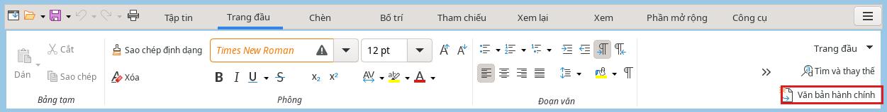
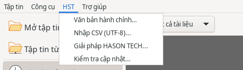
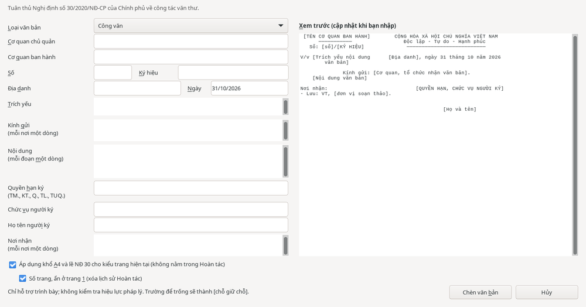
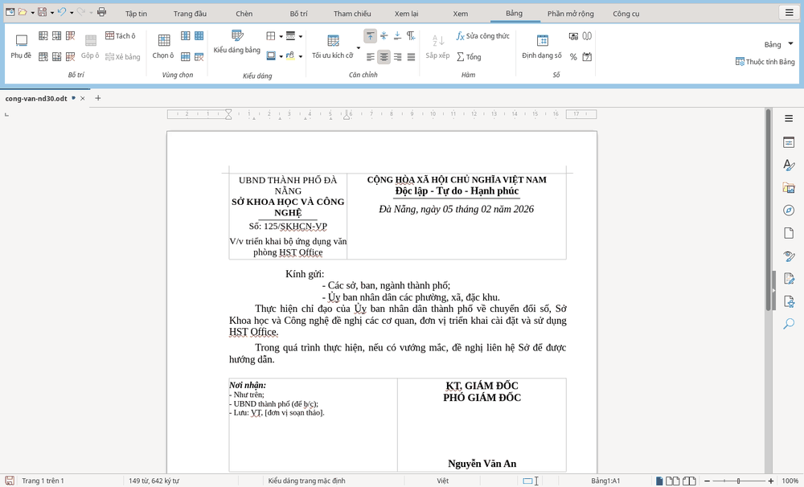

Công cụ HST
Văn bản hành chính
Công cụ hỗ trợ trình bày văn bản theo Nghị định 30/2020/NĐ-CP.
Lưu ý về phạm vi hỗ trợ: Công cụ chỉ hỗ trợ trình bày văn bản; không kiểm tra nội dung hay hiệu lực pháp lý. Hãy đối chiếu quy định hiện hành của cơ quan bạn trước khi ban hành.
Tìm công cụ ở đâu?
- Mở HST Writer ().
- Ở thẻ , nhìn góc phải của dải lệnh, bên dưới : nút . Nút này luôn hiển thị ở đó, không bị thu vào dấu .
- Cách khác: menu (nếu thanh menu đang hiện), hoặc thẻ . Mục menu này có cả ở , HST Sheets và HST Slides; khi chọn ở đó, HST Office tự mở một văn bản trắng mới rồi mới hiện hộp thoại.


Mở công cụ và nhập thông tin
- Trong HST Writer, đặt con trỏ tại vị trí muốn chèn văn bản.
- Bấm nút trên thẻ (hoặc chọn ). Hộp thoại luôn hiển thị bằng tiếng Việt, kể cả khi ngôn ngữ giao diện là tiếng Anh.
- Chọn : , , , , , hoặc .
- Điền , , và . Ví dụ, số
5và ký hiệuUBND-VPđược trình bày thànhSố: 05/UBND-VP. - Điền và kiểm tra . Ngày được điền sẵn theo ngày hiện tại, ở dạng
dd/mm/yyyy. - Điền , và .
- Điền (TM., KT., Q., TL., TUQ.), và .
- Điền . Dòng “Lưu: VT, …” được thêm nếu thiếu.

Xem trước và xử lý thông báo
Khung hiển thị phần đầu văn bản, trích yếu, nội dung, nơi nhận và chữ ký.
Nếu có lỗi, thông báo xuất hiện màu đỏ dưới bản xem trước. Nút chỉ dùng được sau khi sửa lỗi.
Trường để trống sẽ hiện chỗ giữ chỗ trong ngoặc vuông, chẳng hạn [Họ và tên], để bạn điền sau.
Chọn khổ giấy, lề và số trang
- : đặt khổ A4, lề trên 20 mm, dưới 20 mm, trái 30 mm và phải 15 mm.
- : đánh số ở giữa phía trên và không hiển thị số trên trang đầu.
Chú ý trước khi chọn: Thay đổi khổ giấy và lề không nằm trong . Tùy chọn số trang xóa lịch sử . Hãy cân nhắc các tùy chọn này trước khi chèn.
Chèn văn bản và hoàn tác
- Kiểm tra nội dung trong bản xem trước và các tùy chọn trang.
- Bấm để đưa văn bản vào vị trí con trỏ.
- Kiểm tra văn bản đã chèn và điền các chỗ giữ chỗ còn lại.
Công cụ áp dụng phông Times New Roman, cỡ chữ, chữ in hoa, đường kẻ và căn lề theo Phụ lục I của Nghị định.

Nếu vừa chèn sai, nhấn Ctrl+Z một lần để xóa toàn bộ văn bản vừa chèn. Thao tác này không khôi phục các thay đổi trang và lịch sử hoàn tác đã nêu ở trên.